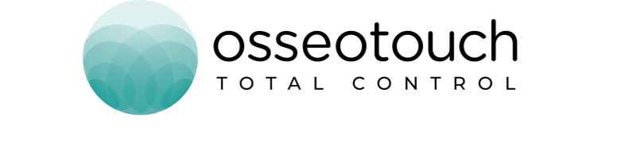

18 MESI DI BLEXO
con il Dr. Luca Boschini
Riveda il webinar del Dr. Luca Boschini sugli estrattori magnetodinamici di nuova generazione: 18 mesi di pratica clinica quotidiana, casi reali, tempi operativi, scelta dell'estrattore in ogni scenario e socket preservation.
Rivedi il webinar
18 Mesi di Blexo — Estrattori di nuova generazione
Il Dr. Luca Boschini illustra l'esperienza clinica con i kit Blexo per estrazioni atraumatiche: Pathfinder e AngleFit (8 estrattori in 2 famiglie), tassi di successo, curva di apprendimento e protocollo per socket preservation.